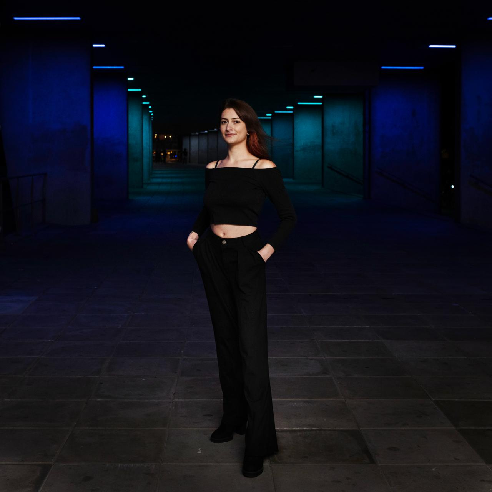

Artistic statement
Marina’s work embodies the belief that "art is the key to understanding ourselves." By
incorporating complex interests like emotions, and human connection she experiments with the
processes of further developing those concepts. Working across various media, she uses
vibrant colors and lets the rhythm of creation guide her hand, resulting in organic visuals that
invite a deeper connection with the viewer.
